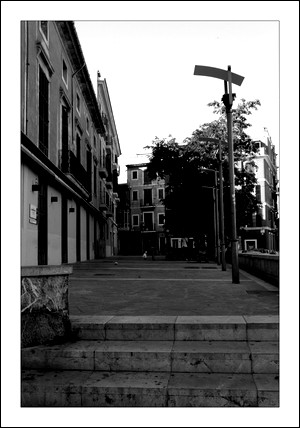

Plaza del "Pes de sa Paia"
Plaza del "Pes de sa Paia"
La plaza del "Pes de sa Paia" antiguamente tenia un porche destruido en 1869 y fue unos de los lugares más importantes de la organización mercantil medieval. Su nombre proviene de que aquí se pesaba y vendía la paja, aparte de recaudar los impuestos que se le atribuía al producto.